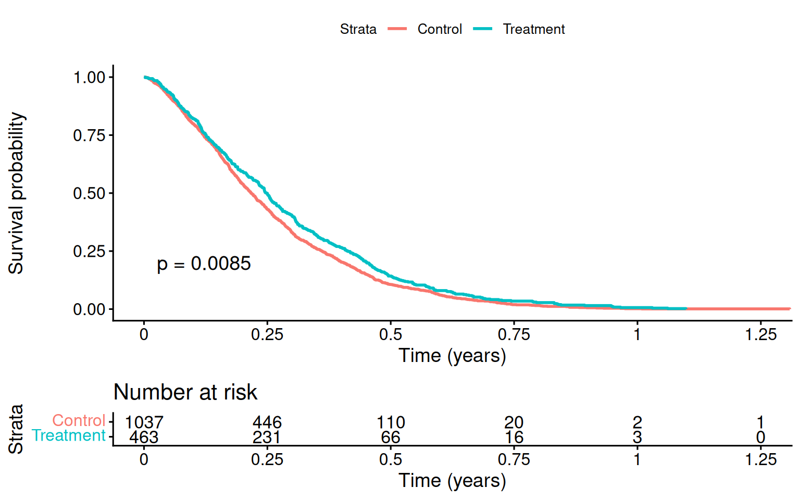

17 Survival Analysis with Causal Inference
When the outcome is time-to-event, such as death, readmission, job exit, or machine failure, ordinary regression is not enough. Some observations are censored. We know the event had not happened by the end of follow-up, but we do not know the event time. Dropping those observations or treating the observed follow-up time as the event time creates bias.
I cover:
- Cox proportional hazards models with covariate adjustment.
- Inverse probability of censoring weighting (IPCW).
- Restricted mean survival time (RMST) differences.
- Doubly robust survival estimators in
riskRegression.
17.1 The challenge of censored outcomes
Censoring means we observe \(\min(T_i, C_i)\) and \(\delta_i = \mathbb{1}\{T_i \le C_i\}\), where \(T_i\) is the event time and \(C_i\) is the censoring time. The main quantity of interest is the survival function
\[ S(t) = P(T > t) \]
the probability of surviving past time \(t\). Treatment effects are usually reported as:
- Hazard ratio (HR): \(HR = h_1(t) / h_0(t)\) (the ratio of hazards under treatment vs control). Easy to estimate but hard to interpret causally (Hernán 2010).
- Restricted mean survival difference (RMST): \(\int_0^\tau [S_1(t) - S_0(t)] dt\) — the difference in mean survival up to time \(\tau\). Causally interpretable as a “years gained” quantity.
- Survival probability difference: \(S_1(t) - S_0(t)\) at a specified time. Reports a direct probability difference.
17.2 Setup: simulated survival data
17.3 Kaplan-Meier survival curves
The Kaplan-Meier estimator is the basic nonparametric estimate of \(S(t)\):
km_fit <- survfit(Surv(time, event) ~ trt, data = df)
ggsurvplot(km_fit, data = df,
pval = TRUE,
risk.table = TRUE,
xlab = "Time (years)",
legend.labs = c("Control", "Treatment"))
The KM curve is descriptive. It is not enough for causal inference here because treatment is related to baseline covariates.
17.4 Cox proportional hazards with adjustment
The familiar regression approach is a Cox proportional hazards model with covariate adjustment:
| term | estimate | std.error | statistic | p.value | conf.low | conf.high |
|---|---|---|---|---|---|---|
| trt | 0.669 | 0.072 | -5.608 | 0 | 0.582 | 0.770 |
| age | 1.035 | 0.003 | 10.754 | 0 | 1.029 | 1.042 |
| sex | 1.347 | 0.064 | 4.663 | 0 | 1.189 | 1.527 |
The estimated hazard ratio for treatment should be close to the true \(\exp(-0.4) \approx 0.67\).
17.4.1 The interpretation problem with hazard ratios
The Cox hazard ratio is not a simple mean treatment effect. It compares hazards among those still at risk at time \(t\), and that risk set is itself affected by treatment. I would report it, but not rely on it as the only causal summary.
17.5 Restricted Mean Survival Time (RMST)
The restricted mean survival time is the expected survival time up to a cutoff \(\tau\):
\[ \text{RMST}(\tau) = E[\min(T, \tau)] = \int_0^\tau S(t)\, dt. \]
The RMST difference is easier to interpret:
\[ \Delta_{\text{RMST}}(\tau) = \text{RMST}_1(\tau) - \text{RMST}_0(\tau) = \int_0^\tau [S_1(t) - S_0(t)]\, dt. \]
It also does not require proportional hazards.
# Use survRM2 via riskRegression / manually computing from KM
tau <- 5 # restrict to 5 years
# Manual RMST: integrate the KM curve up to tau.
# (For production use, prefer a tested implementation such as
# survRM2::rmst2; the helper below is for transparency.)
# Read the step function directly from fit$time / fit$surv, anchor
# S(0) = 1 explicitly, and integrate as a left-endpoint rectangle sum
# over the grid (0, event times <= tau, tau). This avoids relying on
# how summary.survfit emits a row at time 0 and never duplicates tau in
# a way that drops the final [last event, tau] interval.
rmst_arm <- function(time, event, tau) {
fit <- survfit(Surv(time, event) ~ 1)
keep <- fit$time <= tau
t_grid <- c(0, fit$time[keep], tau)
# Survival height on each interval [t_j, t_{j+1}): S(0) = 1, then the
# KM value just after each event; the trailing value is a placeholder
# dropped by head(., -1) below.
last_s <- if (any(keep)) fit$surv[keep][sum(keep)] else 1
s_grid <- c(1, fit$surv[keep], last_s)
sum(diff(t_grid) * head(s_grid, -1))
}
rmst_trt <- rmst_arm(df$time[df$trt == 1], df$event[df$trt == 1], tau)
rmst_ctrl <- rmst_arm(df$time[df$trt == 0], df$event[df$trt == 0], tau)
cat(sprintf("RMST(τ=5) under treatment: %.3f years\n", rmst_trt))RMST(τ=5) under treatment: 4.351 yearsRMST(τ=5) under control: 4.147 yearsDifference: 0.203 yearsThe RMST difference says how many survival years are gained up to the cutoff \(\tau\).
17.5.1 Adjusted RMST via IPW
To adjust for confounding, weight the KM curve by the inverse propensity score:
# Propensity score
ps_fit <- glm(trt ~ age + sex, data = df, family = binomial)
df$ps <- predict(ps_fit, type = "response")
df$ipw <- ifelse(df$trt == 1, 1 / df$ps, 1 / (1 - df$ps))
df$ipw <- pmin(df$ipw, quantile(df$ipw, 0.99)) # trim
km_ipw <- survfit(Surv(time, event) ~ trt, data = df, weights = ipw)
print(km_ipw, rmean = tau)Call: survfit(formula = Surv(time, event) ~ trt, data = df, weights = ipw)
records n events rmean* se(rmean) median 0.95LCL 0.95UCL
trt=0 1039 1499 1061 4.12 0.0365 6.46 5.95 6.91
trt=1 461 1494 897 4.40 0.0317 7.73 6.94 8.85
* restricted mean with upper limit = 5 The IPW-adjusted RMST removes the baseline imbalance.
17.6 Inverse Probability of Censoring Weighting (IPCW)
If censoring is informative, for example if sicker patients drop out earlier, treating censoring as random is biased. IPCW weights observations by the inverse probability of remaining uncensored, conditional on covariates.
# Model the censoring hazard
# Use 1 - event as the "censoring" indicator
cens_fit <- coxph(Surv(time, 1 - event) ~ trt + age + sex, data = df)
# Predict survival of censoring at each event time for each unit
df_sub <- df |>
arrange(time)
times_at_risk <- df_sub$time
# G(t | X): probability of being uncensored at time t given X
# Use survfit on cens_fit to get S_C(t | X)
sc_fit <- survfit(cens_fit, newdata = df_sub)
# We only need each subject's OWN survival at their OWN event time, not the
# full cross product of all N subjects' curves at all N event times.
# summary(sc_fit, times=df_sub$time, extend=TRUE)$surv followed by diag()
# builds that full N x N matrix just to throw away everything off the
# diagonal -- for N in the tens of thousands this is a multi-GB allocation
# and can OOM. Look each subject's own time up in sc_fit's existing
# per-subject step function instead (sc_fit$surv is already an
# n_times x N matrix that survfit(newdata=) computes regardless; this just
# avoids building a second, larger one on top of it). For very large N,
# packages like `riskRegression`/`pec` avoid materializing even that
# per-subject curve matrix and would scale further.
sc_idx <- findInterval(df_sub$time, sc_fit$time)
sc_at_t <- sc_fit$surv[cbind(pmax(sc_idx, 1), seq_len(nrow(df_sub)))]
sc_at_t[sc_idx == 0] <- 1 # before the first censoring event, S_C = 1
# IPCW weight: 1 / P(C > T_i | X_i) for event times, 0 for censoring times
df_sub$ipcw <- ifelse(df_sub$event == 1, 1 / pmax(sc_at_t, 0.01), 0)
summary(df_sub$ipcw[df_sub$event == 1]) Min. 1st Qu. Median Mean 3rd Qu. Max.
1.001 1.075 1.137 1.149 1.219 1.353 IPCW upweights observations that remain uncensored despite having a high predicted chance of censoring.
17.7 Doubly-robust survival estimation
The riskRegression package combines the outcome model, propensity score, and censoring model:
# Average treatment effect on survival probability at t = 5
# ATE(t) = P(T(1) > t) - P(T(0) > t)
df$trt_f <- factor(df$trt)
cox_for_ate <- coxph(Surv(time, event) ~ trt_f + age + sex, data = df,
x = TRUE, y = TRUE)
ps_for_ate <- glm(trt_f ~ age + sex, data = df, family = binomial, x = TRUE)
# With right-censoring, the IPTW/AIPTW survival estimator needs a model for
# the censoring mechanism (a Cox model for time-to-censoring).
cens_for_ate <- coxph(Surv(time, event == 0) ~ age + sex, data = df,
x = TRUE, y = TRUE)
ate_surv <- ate(
event = cox_for_ate,
treatment = ps_for_ate,
censor = cens_for_ate,
data = df,
times = 5,
estimator = c("Gformula", "IPTW", "AIPTW"),
cause = 1,
se = TRUE,
B = 0,
verbose = FALSE
)
summary(ate_surv) Average treatment effect
- Treatment : trt_f (2 levels: "0" "1")
- Event : event (cause: 1, censoring: 0)
- Time [min;max] : time [0.0372;12]
- at risk/time : 5
number in treatment 0 561
number in treatment 1 283
Estimation procedure
- Estimators : G-formula, Inverse probability of treatment weighting, Augmented and double robust estimator
- Uncertainty: Gaussian approximation
where the variance is estimated via the influence function
Testing procedure
- Null hypothesis : given two treatments (A,B) and a specific timepoint, equal risks
- Confidence level : 0.95
Results:
- Difference in standardized risk (B-A) between time zero and 'time'
reported on the scale [-1;1] (difference between two probabilities)
(difference in average risks when treating all subjects with the experimental treatment (B),
vs. treating all subjects with the reference treatment (A))
time trt_f=A risk(trt_f=A) trt_f=B risk(trt_f=B) difference ci
5 0 0.393 1 0.287 -0.106 [-0.14;-0.07]
p.value
5.36e-09
difference : estimated difference in standardized risks
ci : pointwise confidence intervals
p.value : (unadjusted) p-value # The summary displays one estimator; put all three side by side
ate_tab <- as.data.frame(data.table::as.data.table(ate_surv, type = "diffRisk"))
knitr::kable(ate_tab[, c("estimator", "estimate", "se", "lower", "upper")],
digits = 3,
caption = "Risk difference at t = 5 under each estimator.")| estimator | estimate | se | lower | upper |
|---|---|---|---|---|
| GFORMULA | -0.106 | 0.018 | -0.142 | -0.070 |
| IPTW | -0.095 | 0.027 | -0.148 | -0.041 |
| AIPTW | -0.099 | 0.027 | -0.152 | -0.046 |
The object contains three estimators, shown side-by-side in the table:
- Gformula — parametric g-computation using the Cox model only.
- IPTW — inverse probability of treatment weighting.
- AIPTW — augmented IPTW (doubly robust); the recommended default.
Agreement across these estimates is reassuring. Disagreement is a warning about model specification.
17.8 Hazard ratio vs RMST: which to report?
For causal reporting, RMST is often easier to defend than the hazard ratio:
| Quantity | Pro | Con |
|---|---|---|
| Hazard ratio | Compact summary; familiar | Requires PH; no causal interpretation; conditional on survivors |
| RMST difference | Directly interpretable as “years gained”; no PH assumption | Depends on cutoff \(\tau\); less familiar |
| Survival probability difference at t | Direct probability statement | Depends on choice of \(t\) |
In practice, report at least:
- The KM curves with risk tables (description).
- The Cox HR with adjustment (familiar comparison to literature).
- The RMST difference at a clinically meaningful \(\tau\) (interpretable causal contrast).
- The DR ATE on survival probability at one or two follow-up times.
17.9 Connections
- The G-Methods chapter covers IPTW with time-varying treatments — directly applicable when treatment evolves during follow-up. The IPCW machinery here is the censoring analogue.
- The Heterogeneous Effects chapter ML methods extend to survival via causal survival forests (
grf::causal_survival_forest). - The Bayesian Causal Inference chapter extends to survival via Bayesian additive regression trees for time-to-event outcomes (
BART::surv.bartfor discrete-time survival, orBART::abartfor an accelerated-failure-time model with right-censoring).
17.10 Summary
- Survival outcomes require methods that handle censoring.
- Cox models are familiar, but hazard ratios are hard to interpret causally.
- RMST differences are often the clearest causal summary.
- IPCW handles informative censoring.
-
riskRegression::atereports g-formula, IPTW, and AIPTW estimates for survival probabilities.